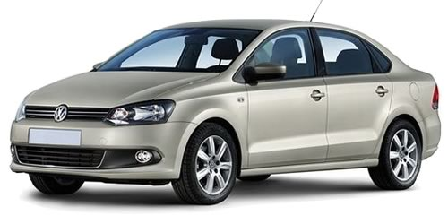
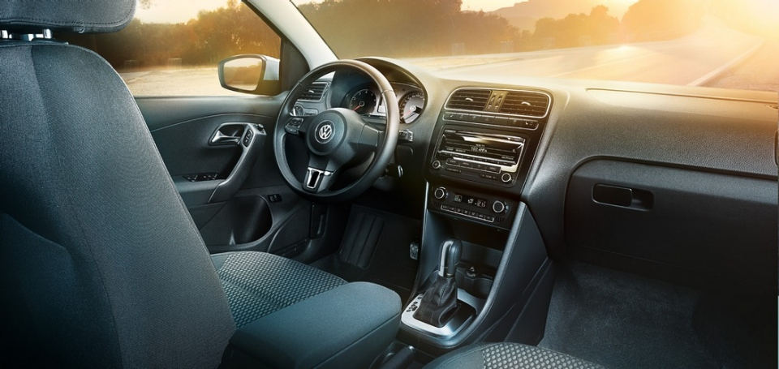

Volkswagen Polo Sedan (Фольксваген Поло Седан) – бюджетный седан B-класса, впервые в истории марки спроектированный специально для российского рынка. Автомобиль построен на удлиненной платформе хэтчбека Polo. Премьера модели состоялась в мае 2010 года, а производство ее налажено на заводе в Калуге.
Обладая внешним сходством с хэтчбеком Поло, седан получил иной бампер, круглые линзы противотуманных фар, другие очертания фар головного света и свою фальшрадиаторную решетку. К тому же, седан длиннее хэтчбека на 414 мм (4384 мм), а его колесная база растянута на 80 мм и достигла 2552 мм, благодаря чему задние пассажиры получили дополнительное пространство для ног.

В салоне Polo Sedan доминирует недорогой, но плотный и износостойкий пластик, а спинка заднего дивана, в зависимости от комплектации, складывается целиком или в пропорции 60:40, за счет чего багажный отсек объемом 460 литров можно существенно увеличить.
В базовой комплектации Trendline, Фольксваген Поло укомплектован минимальным набором оборудования и 14-дюймовыми штампованными колесными дисками. В версии Comfortline предусмотрен подогрев передних сидений и антиблокировочная система, а в топовой комплектации Highline есть кондиционер, аудиосистема и 15-дюймовые легкосплавные диски. В качестве дополнительных опций доступны боковые подушки безопасности, система курсовой устойчивости (ESP), климат-контроль и датчик парковки.
Под капотом седана Polo установлен 4-цилиндровый бензиновый двигатель объемом 1,6 литра. Он развивает 105 л. с. (77 кВт) мощности при 5250 об/мин. Максимальный крутящий момент равен 153 Нм при 3800 об/мин, а потребление топлива в смешанном цикле находится в пределах 6,5-7 литров. С 5-ступенчатой механической коробкой передач Поло Седан набирает «сотню» за 10,5 секунд, а в комплектации с 6-диапазонным «автоматом» с функцией Tiptronic на те же действия требуется 12,1 секунды.
Источник: Volkswagen-Polo.infocar.ua